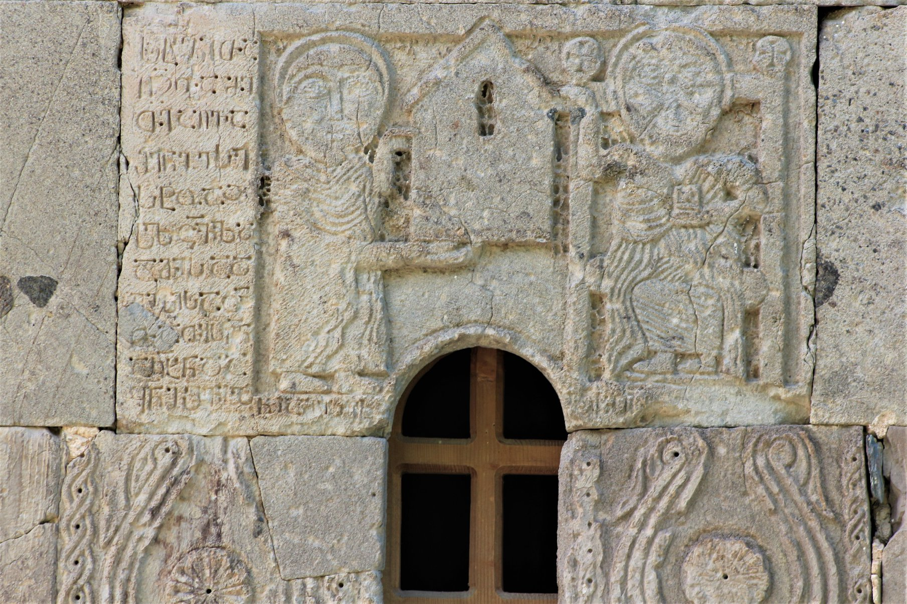

აგარის (ურვალის) თეოდორეს წარწერაAgara (Urvali) inscription of Theodore
აგარის (ურვალის) თეოდორეს წარწერა
Agara (Urvali) inscription of Theodore
შინაარსი / Summary
საამშენებლო Building
ბიბლიოგრაფია Bibliography
კრიტიკული გამოცემა Interpretive Edition
ს(ა)ხ(ე)ლითა
ღ(მრთისა)ჲთა მე
თ(ეოდორ)ე აღვა -
შ(ე)ნე ესე
5სტოაჲ
ს(ა)ლ(ო)ცვ(ე)ლ(ა)დ
ამის ად -
გ(ი)ისა ო(ჳფლის)ა
თ(ეო)დ(ორესა)თჳს ღ(მერთმა)ნ
10აკ(ურთ)ხ(ე)ნ და
ყ(ოველ)ნი შვილ ნი ამის ეკლ შ(ეიწყალე)ნ
დიპლომატიური გამოცემა Diplomatic Edition
ႱႾႪႨႧႠ
ႶჂႧႠ ႫႤ
ႧႤ ႠႶႥႠ
ႸႬႤ ႤႱႤ
5ႱႲႭႠჂ
ႱႪႺႥႪႣ
ႠႫႨႱ ႠႣ
ႢႨႱႠ ႭႠ
ႧႣႧჃႱ ႶႬ
10ႠႩႾႬ ႣႠ
ႷႬႨ ႸႥႨႪ ႬႨ ႠႫႨႱ ႤႩႪ ႸႬ

აგარა (ურვალის)
{'default': 'ღვთის სახელით მე, თეოდორემ, ავაშენე ეს სტოა ამ ადგილის სალოცველად უფლისა თეოდორესათვის, ღმერთმა\n აკურთხოს და ამ ეკლესიის ყოველი შვილი შეიწყალე, [უფალო]. In the name of God, I, Theodore built this stoa in this place to pray to God for Theodore, God bless and have mercy on everybody who are the children of this church [Oh, God].'}
{'default': 'ურავლის აგარაში მოზრდილი სამონასტრო კომპლექსი ყოფილა, შემორჩენილ ნაგებობათაგან მნიშვნელოვანია ორი - ეკლესია და\n სატრაპეზო. ორივეზე მოიპოვება ასომთავრული საამშენებლო წარწერები. ეკლესიის წარწერა X საუკუნისაა, ხოლო სატრაპეზოსი - XI საუკუნისა.\n აგარის ეკლესიის წარწერის მიხედვით, სხვა წყაროებით უცნობ ვინმე თეოდორეს აუშენებია სტოა - ეკლესიის გარშემოსავლელი. ვალერი სილოგავას აზრით, ვინაიდან წარწერიანი ფილა\n ეკლესიის აღმოსავლეთის ფასადის სარკმლის ზემოთაა ჩასმული (იგი მისი ზედა და ქვემო ჭრილით კარგად არის მორგებული სარკმლის ღიობს,\n თუმცა აცდენილია სიგანით ღიობის ორივე მხარეს აყოლილ ორნამენტს), ხოლო ტაძრის გარშემო სტოა არსად ჩანს, აშკარაა, რომ იგი თავდაპირველ ადგილას არ ზის და აქ მეორედ\n გამოყენების შედეგად არის მოხვედრილი. ფილაზე, მარცხნივ, წარმოდგენილია ქტიტორი, მთელი ტანით, ოდნავ მარცხნივ მიბრუნებით და ეკლესიის მოდელით ხელში,\n რომელსაც მიართმევს მარჯვნივ გამოსახულ მაცხოვარს. მაცხოვარს მაკურთხებელი მარჯვენა დარბაზული ეკლესიის სახურავზე აქვს შეხებული.\n ვალერი სილოგავას აზრით, ეს წარწერა X საუკუნის იმ რელიეფების ჯგუფში თავსდება (ოპიზა, ბრეძა, ახაშენი, ოშკი, ჯოისუბანი, ქოროღლო, ფეთობანი, კვაისა-ჯვარი...),\n რომლებზედაც წარმოდგენილია ქტიტორების გამოსახულება ეკლესიის მოდელით ხელში.\n ასეთი კომპოზიცია დამახასიათებელია სწორედ აღნიშნული დროის ქართული საეკლესიო სკულპტურისათვის. Two buildings - a church and bell-tower are preserved from the Monastery of Agara in Urvali. Both of the buildings have the Asomtavruli inscriptions. The church can be dated to the X c and the bell-tower to XI c. According to the inscription of Agara church a person named Theodore whose identity is unknown from any other source had built this stoa - the entrance of the church. Valeri Silogava considers that the stoa has been reused as the plaque with the inscriptions is embedded along the window of the east facade (the plaque fits well to the cut of window from its up and down sides, but with its width does not suit well the ornament along the window) and there in no other stoa in the surroundings of the church. On the left part of the plaque there is the figure of the ktetor with his full body. His figure is turned to the left and he is holding the model of a church in his hand. He dedicates the church to the Savior. The Savior touches the roof of the model of the hall church with his right hand. Valeri Silogava states that this inscription follows to the X century tendency of embossed figures representing the ktetor of the church with the model of a church in their hands (in Opiza, Bredza, Akhasheni, Oshki, Joisubani, Koroghlu, Phetobani, Kvaisa - Jvari…). This artistic style is characteristic to the religious sculptures of this period of Georgia.'}
<div type="edition" xml:lang="ka" ana="mtavruli" xml:space="preserve">
<ab>
<lb n="1"/><w lemma="ქრისტე"><expan><abbr>ქ</abbr><ex>რისტ</ex><abbr>ე</abbr></expan></w>
<w lemma="განსუენება"><expan><abbr>გა</abbr><ex>ნ</ex><abbr>ო</abbr><ex>ჳ</ex><abbr>ს</abbr><ex>უ</ex><abbr>ენე</abbr></expan></w>
<w lemma="სულ">სოჳ<lb n="2" break="no"/>ლსა</w>
<name nymRef="ვაჩა">ვაჩაჲს<lb n="3" break="no"/>ასა</name>
<name nymRef="გურა"><expan><abbr>გო</abbr><ex>ჳ</ex><abbr>რაჲ<lb n="4" break="no"/>სასა</abbr></expan></name>
<name nymRef="მირა"><expan><abbr>მ</abbr><ex>ი</ex><abbr>რა</abbr><ex>ჲ</ex><abbr>ს</abbr><ex>ა</ex><abbr>ს</abbr><ex>ა</ex></expan></name>
</ab>
</div>